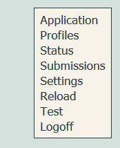
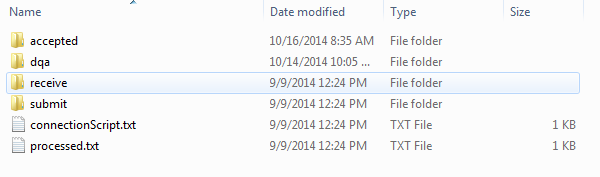

Configuration
The configuration screen can be access from the admin screen by selecting the Settings on the menu located on the right edge of the screen. (See screenshot on the right.) The settings then appear in one large table. After making changes, simply click on update settings at the bottom of the page to save them.
The following is an explanation of each setting.
Application external URL base
This is used to indicate the URL base for the DQA as it appears to the outside world. You generally do not need to set this. It may be used later in some installations that provide links to users in emails in order to allow them to be linked backed to the DQA.
Read in file enabled
Indicates whether the DQA should process files from a local directory or not. If enabled the DQA will look in that directory for folders to import data from.
Base directory
The absolute file directory where the data folders for import will be placed. This must be a folder that is created by you on the same system that the DQA is running on within Tomcat. There should be no other data in this folder and it should be dedicated for use by the DQA.
Within this base directory, DQA is going to expect you to create folders during runtime. Each of the folders you create will be linked automatically to a profile with the same name as the folder. Inside each of these folders HL7 data can be submitted and reports read. In this way it is possible to communicate with the DQA via files and folders and have data processed and verified.
Screen shot of a single profile folder, configured by DQA to receive and process data:

Please note that the folders shown reside in the profile folder, which in turns resides in the base directory which is defined here. This means that ths configuration allows you to specify a single root folder and inside this you will later create sub-folders for each profile you wish to import data under. And these folders will have more folders created under them by DQA.
Accepted directory name
The name of the directory within the profile folder where data will be copied to once it has been processed by
DQA. If not specified DQA uses
accepted
as the default.
DQA directory name
The name of the directory within the profile folder where the weekly DQA reports will be saved. If not specified
DQA uses
dqa
as the default.
Receive directory name
The name of the directory within the profile folder where the logs, acknowledgements, dqa reports and other
outputs are saved from the process of the incoming data in the submit directory. If not specified DQA uses
receive
as the default.
Submit directory name
The name of the directory within the profile folder where DQA reads the incoming data from. This is where you will
want to put new data files in for DQA to read them. If not specified DQA uses
submit
as the default.
Processing thread count
This is the total number of concurrent threads that can be run to process incoming data. The DQA will only process data from a single profile, one file at a time. Thus, if a submitter sends in 100 files under the same file/profile then the DQA will process each file in the order received. However, another thread can process a different file/profile while this is being processed. By default the DQA processes up to 5 files at the same time.
Wait after last update (secs)
The number of seconds to wait since the last update to a local file. If a file is update in the last 60 seconds DQA will postpone the processing until it checks the file folder again. This is to ensure that files are not still be written to by an external transfer process. By default this is 60 seconds.
Export connection script
Controls whether the connection script that may be used by the Simple Message Mover or DQA Tester will be exported when the folder is created. If it is export, it is placed directly in the local profile folder where it can be picked up. By default this is false.
Read submission table enabled
Enables the DQA to read from and process items in the submission table. This must be enabled to in order to allow for files to be processed after being uploaded into the DQA from the admin menu, so it's generally recommended to enable this. By default this is false.
Pause after checking for updates (secs)
The number of seconds to wait after checking the submission table to change. Defaults to 60 seconds.
Enforce unique message control ids
Normally DQA does not require nor inforce that message control ids should be unique. (The message control id is defined by the sender and is required to be unique for a given MSH-4 value and day of being sent. This id has to be placed in the ACK and may be used by the original sender to link the original request back to the response.) The DQA can be configured to enforce uniqueness of the message control id within a single submission. If enabled then submissions will error if a message control id is reused within a single submission. Defaults to false.
Upload enabled
Enables files to uploaded into the DQA from the admin menu. It's generally recommended to enable this. By default it is set to false.
Uploaded local file directory name
The name of a folder that DQA in Tomcat can have access to for temporarily writing files during the upload process. This must be set in order for uploads to work.
Export batches enabled
Enables data to be exported on a weekly basis from the DQA and saved in a local folder for processing by external systems. These files will only contain patients and vaccinations that were submitted by production interfaces and passed data quality checks without any errors. In addition, the original HL7 messages are discarded, patients are sorted by last name and first, records are combined by MRN, and duplicate and deleted vaccinations are removed. By default this is not enabled.
Base directory path
The directory where the data will be exported to.
MSH Processing Id
The processing id to put in all the messages.
MSH Receiving Application
The value to put in MSH-5.
MSH Receiving Facility
The value to put in MSH-6.
MSH Sending Application
The value to put in MSH-3.
MSH Version Id
The value to put in MSH-4.
Validate header
This section defines settings used during the validation of HL7 MSH segment.
Sending facility max length
The maximum length of the value in MSH-4.
Sending facility min length
The minimum length of the value in MSH-4.
Sending facility is numeric
The value in MSH-4 must be made of numeric (0-9) characters only.
Sending facility is PFS
The value in MSH-4 must match format of the Texas ImmTrac PFS number that they use to identify facilities.
Validate patient
This section defines settings used during the validation of patient information.
Do not validate VFC status (PV1-20)
VFC status used to be transmitted at patient level in PV1-20. This use has now been removed from the standard and is now only seen in older interfaces or for backwards compatibility. DQA can be asked to ignore this field for the purposes of validation. Enabling this will mean that the values are not mapped into the code recieved table or verified, but they will still be save in the patient table as sent in.
Validate vaccination
This section defines settings used during the validation of vaccination information.
Vaccination facility max length
The maximum length of the value in RXA-11.4 for administered vaccinations.
Vaccination facility min length
The minimum length of the value in RXA-11.4 for administered vaccinations.
Vaccination facility is numeric
The value in RXA-11.4 for administered vaccinations must be made of numeric (0-9) characters only.
Vaccination facility is PFS
The value in RXA-11.4 for administered vaccinations must match format of the Texas ImmTrac PFS number that they use to identify facilities.
DQA report
Configures how the DQA report is created.
Ready for Production flag enabled
This allows a section at the top of the report to indicate if the site is ready for production by having enough data submitted and enough of the required fields completed. By default this is true.
Ready for Production trigger level
The number of messages that need to be in a batch in order for it to be large enough to qualify for testing for ready for production. By default this is set to 50.
Weekly batch
The weekly batch will include all data submitted during the seven previous days. The weekly batch is used to create a DQA report which is saved in the file directory under the same name as the interface.
Batch day
The day when weekly batches are put together. The default is Sunday (1).
Batch after
The hour at which weekly batching can begin. The default is 1 AM (01:00).
Batch before
The hour by which weekly batching should stop. The default is 12 PM (12:00).
Weekly export
Configures when data will be exported. Originally this was designed by ImmTrac so that data could come out over the course of a week in order to ensure that not all data from a week had to processed in one day.
Export day for highest priority
The day for the highest priority exports.
Export day for high priority
The day for the high priority exports.
Export day for normal priority
The day for the normal priority exports.
Export day for low priority
The day for the low priority exports.
Export day for lowest priority
The day for the lowest priority exports.
Export time after
The hour at which exports could be sent out. The default is 1 PM (13:00).
Export time before
The hour at which exports should stop being sent out. The default is 7 PM (19:00).
Database Cleanup
Regular operation of DQA causes a large amount of data to accumulate in the database. In most cases this data can be deleted. But this must be configured by the admin as every situation and record retention policy is different. Different types of data can be deleted on different schedules, which allows for delete details but retaining aggregate information. By deleting the Data Fields, Message Text and Submissions, the DQA will not retain any personal identifiable information.
Database Cleanup Enabled
By default this is false.
Cleanup day
The day when the cleanup operation should be run. 1 AM (01:00)
Cleanup after
The hour at which the cleanup can start.
Cleanup before
The hour by which the cleanup should stop. The default is 12 PM (12:00).
Delete Data Fields received after
The number of days data fields, such as patient and vaccination level data should be retained. The DQA breaks out data received in message into table dedicated to patient, vaccination, next-of-kin, etc. The default is 30 days.
Delete Message Text received after
The number of days the original message text can be retained. The DQA stores original HL7 messages, as they were received. The default is 60 days.
Delete Message Analysis created after
The number of days to retain the detailed analysis of each message. This contains no patient identifiable data. The default is 150 days.
Delete Submitted Batch Reports created after
The number of days to retain the aggregate information about batch reports for data received. The default is 400 days.
Delete Weekly Batch Reports created after
The number of days to retain the aggregate information about weekly batch reports created. The default is 1,500 days.
Delete Submissions last updated after
The number of days to retain submissions. The default is 30 days.
CDS Software
Clinical Decision Support (CDS) software allows a system, such as the DQA, get vaccination evaluation and forecasting information on patient records. DQA uses this in order to simulate an IIS query interface. In the future the DQA could use this for validation purposes. This should not normally be configured, and is only useful for external testing purposes. The values for these settings will not be documented here.
Remote Reporting
This allows the DQA to be used as a central reporting site for remotely installed Simple Message Mover (SMM) systems. This would not normally be used in other locations. This functionality will not be documented here.